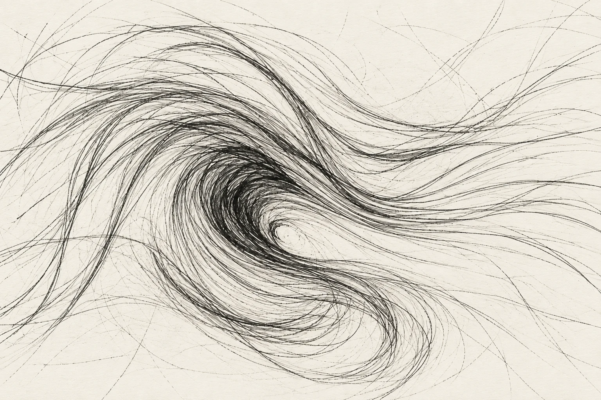
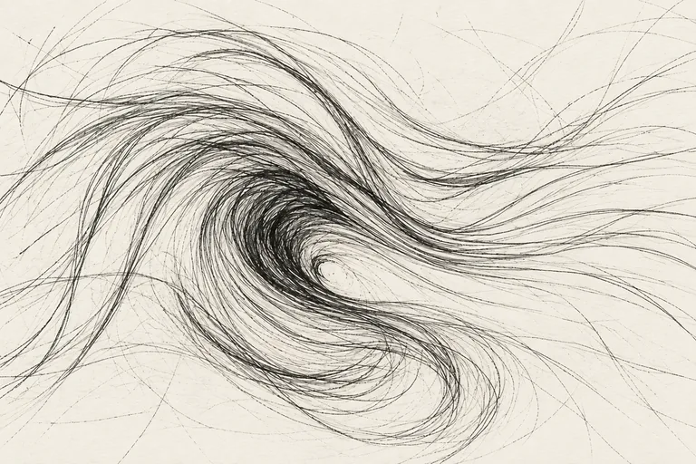
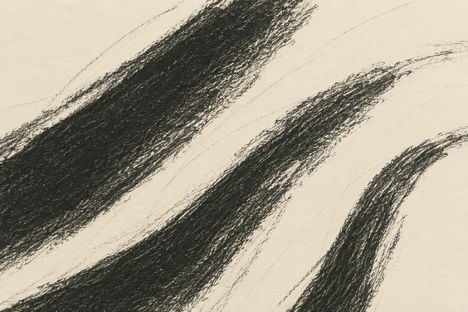
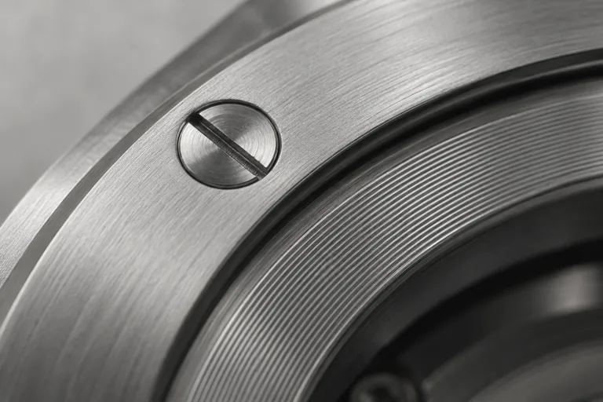
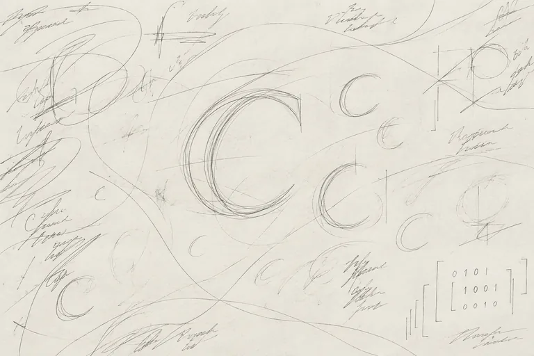
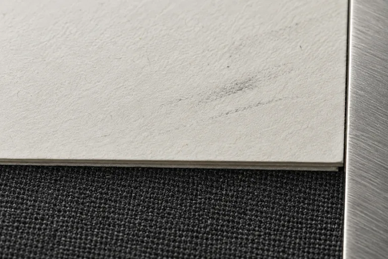

The art
of better.
Human marks.
Precise instruments.
Room to keep improving.


A page to think on. A mark with conviction. Paper, graphite, steel and the warmth of a leather strap.
IDENTITY / TYPE / COLORARTWORK / MOTION / FILES
A little pressure.
A deliberate curve.
The uneven, heavy C holds the craft. Its detached dash holds the technology. Keep both.
The art of better.
BOLD WORDMARK / ARCHIVO BLACK{kind=link}
{kind=link}
{kind=link}
{kind=link}
{kind=link}
{kind=link}
Leave room. Add clear space of at least ¼ of the mark height. Use the mark alone below a 200px lockup.
Keep the weight. Preserve the asymmetry and cut terminals. No thinning, perfect circles, shadows or chrome.
Use the right file. The primary C is paper on charcoal. Leather brown is an accent only, never a logo background or logo color. All lettering is outlined.
Quiet type.
A confident mark.
The same regular face for headings, notes and reading. Monospace for code. Bold reserved for the identity.
Precise instruments.
Room to keep improving.
The everyday thought, clearly written. 0123456789
Thought becomes a tool.
Start with observation. Work through the uncertain parts. Test the result. Regular-weight text gives a longer thought room to breathe.
Download variable desktop font ↓observe()
sketch = make(observation)
result = evaluate(sketch)
revise(result, human_judgment)Code, captions and instrument labels.
Download Mono Regular ↓The C and company name keep their weight. Use this voice sparingly, when something truly needs to stand out.
Download the wordmark font ↓All three families include OFL licenses. Six WOFF2 files and a ready-to-use local stylesheet are bundled. Archivo Black's file weight is 400; its visual weight is already black.
Paper, graphite
and leather.
Soft charcoal, paper and graphite. A restrained leather brown supplies warmth beside the steel.
#464643Primary text and the identity
#F4F1E9Main canvas; lightly warm off-white
#656460Secondary text and pencil-like marks
#929698Material accent and non-text details
#70543ERestrained warmth; a timeless watch strap
#FAF9F6Light reading surface
Paper is the default. Charcoal and graphite carry the marks. Leather brown supplies a small, grounded accent; steel remains a material detail.
Charcoal or graphite on paper. Paper on charcoal. Paper on leather brown. Keep steel out of small text on a light background.
Contrast report ↗ CSS tokens ↓ JSON tokens ↓Surfaces that
show the work.
Five original generated studies, with full PNG masters and lighter WebP exports. Ready to use as illustrations throughout the website.
{kind=link}

Open sketch
Signature hero, motion starting frame; retain open edges and overshoots.
{kind=link}
{kind=link}

Graphite pressure
Editorial background; paper wordmark over the darkest area, verify contrast.
{kind=link}
{kind=link}

Instrument steel
Precision and craft; silver stays a material, not a decorative color accent.
{kind=link}
{kind=link}

Working notation
Human thinking and revision; leave annotations spacious and recognizably drawn.
{kind=link}
{kind=link}

Paper and cloth
Quiet material background or editorial crop; no colored cover accents.
{kind=link}
Keep the source honest. These are generated illustrations and material studies, not documentary photographs. Prompts, provenance, alt text and suggested uses are included.
Use & licensing ↗Asset manifest ↗Generation prompts ↗From a mark
to a method.
Graphite begins loose and uncontained. Continuous strokes gather, align and find syntax. A trace of the hand stays visible.
Open the motion study ↗{kind=link}